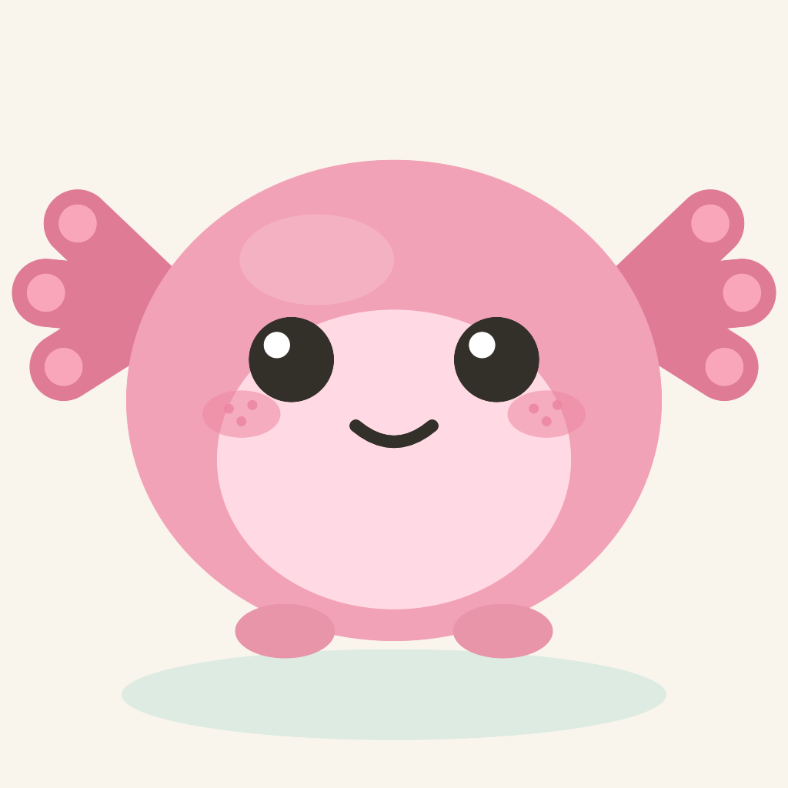
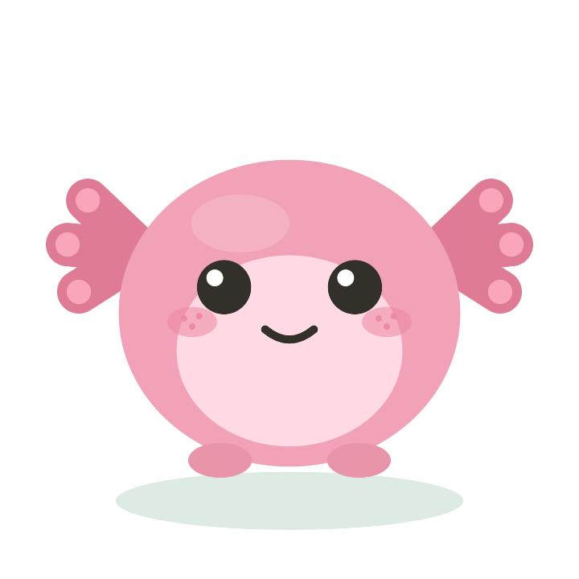
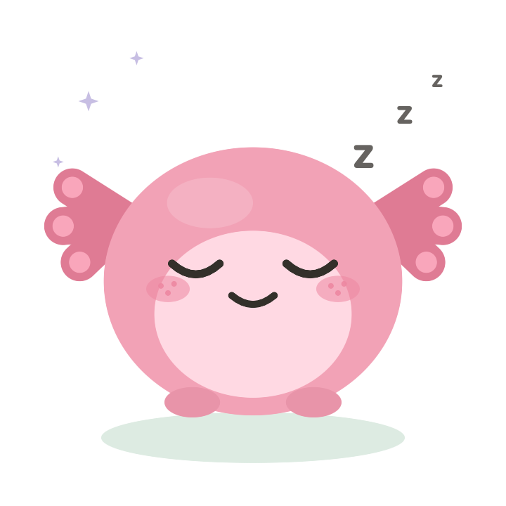
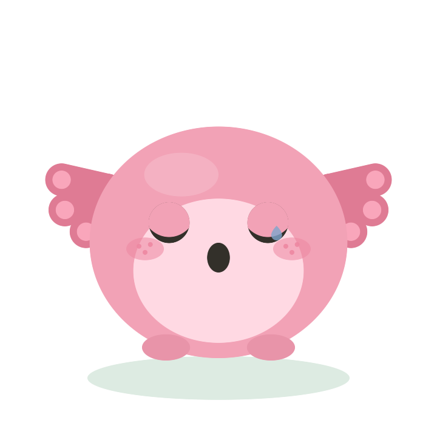
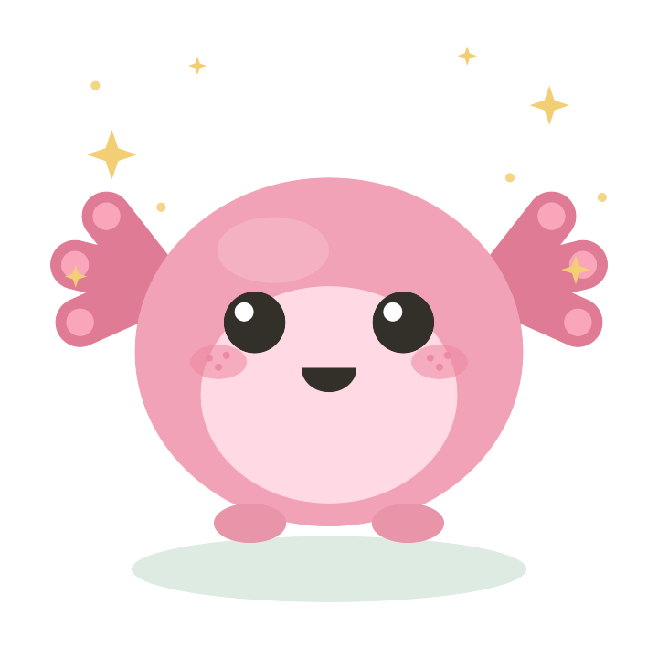
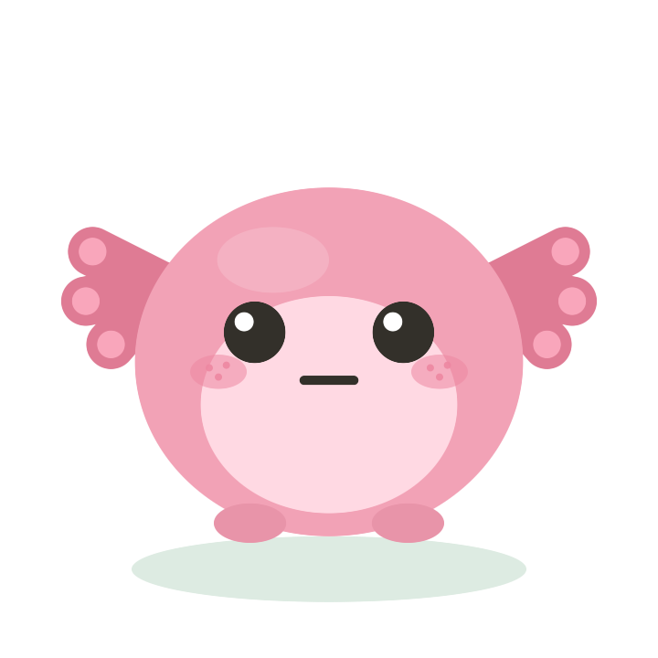
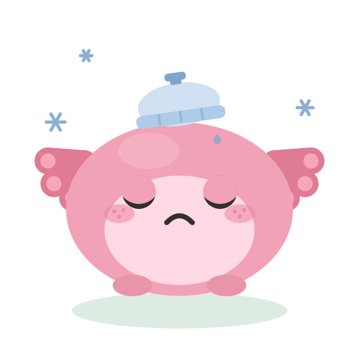
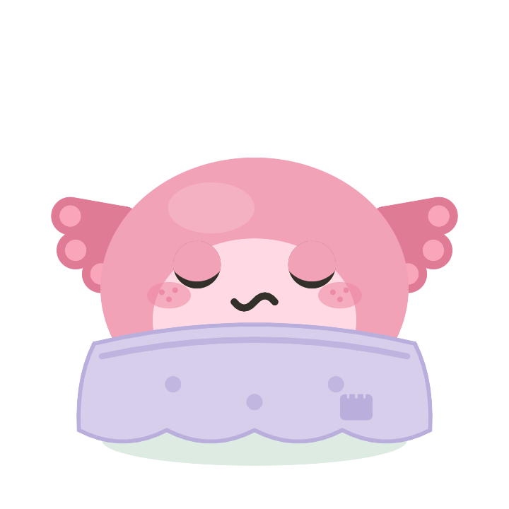
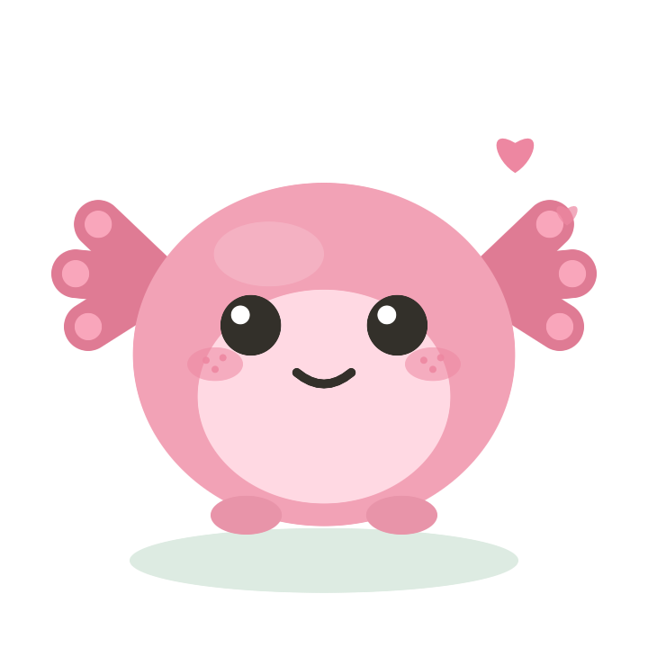
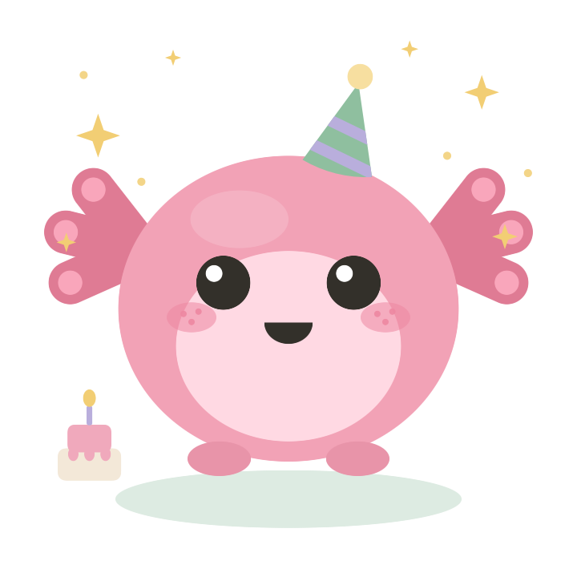

misoA sleep and recovery companion for iPhone and Apple Watch. Miso turns your Apple Health data into one clear picture of how you sleep, recover and spend your energy, with a small friendly face on top of the numbers.

✦ ✧ ✦Wear your Apple Watch to bed. It records your sleep stages, heart rate, HRV, respiratory rate and wrist temperature. Miso rests too. She reads the results in the morning, and she never wakes you to do it.

Keep scrolling to wake her up. After a good night she is bright and ready. After a short one she is sleepy. Her state always mirrors your sleep and recovery, never a random animation.


Six states, each tied to your recovery. When your body asks for rest, she shows it and suggests an easier day. No guilt attached.



Sleep, recovery, load and stress on one screen, each compared only to your own baseline. Never to population averages, never in alarming red.
Duration and stages
This morning's capacity
Activity so far today
Context, not verdicts
All data comes from Apple Health, read only with your permission.
Each morning, tag yesterday in a few seconds: caffeine, workouts, meals, stress. Over the weeks Miso correlates these with your sleep and recovery and shows which habits help and which get in the way. Tap the tags to preview how it works.
English, Russian, Spanish and Simplified Chinese. The app, notifications, watch app and widgets are fully localized, not machine translated.

Language follows your system settings, or pick one manually in the app.
Miso has no servers and no accounts. Health data is processed on your iPhone and never uploaded, because there is nowhere to upload it to. You can export a full copy or erase everything at any time.

The Miso promiseMiso is built to support your rest, not to gamify it. A rough week makes her sleepy, never disappointed. Your first two weeks are free with everything open, then one simple yearly subscription.
Privacy Policy·Terms of Use·hidalyakaa@gmail.com
Miso is a general wellness app, not a medical device. It does not diagnose, treat or prevent any condition. Talk to a doctor about anything that worries you. Apple Health, Apple Watch and iPhone are trademarks of Apple Inc. © 2026 Miso